Dirigido a: Todos los usuarios del sistema
Plataforma: inventario.congeminco.com
Nivel: Usuario principiante · Idioma: Español
Versión del documento: 1.0 · Junio 2026
Esta guía te lleva de la mano desde el primer ingreso hasta el uso completo de cada módulo. Puedes leerla en orden o saltar al capítulo que necesites.
Bienvenida y ¿qué es este sistema?
Para qué sirve
Conceptos en una idea
Cómo funciona por dentro (simple)
Cómo ingresar al sistema (Login)
Conociendo la pantalla: el menú y la barra superior
Roles y permisos: ¿qué puede hacer cada quién?
Dashboard: tu tablero de resumen
Saldos: consultar el stock disponible
Catálogo de productos
Movimientos: entradas, salidas y transferencias
Requerimientos: pedir materiales
Aprobaciones: revisar y entregar pedidos
Mantenimiento: órdenes de trabajo
Reportes
Importar: carga masiva desde Excel
Maestros: configuración del sistema
Glosario para principiantes
Preguntas frecuentes y consejos
Manual de Usuario · Sistema de Inventario JJ Congeminco
1Bienvenida y ¿qué es este sistema?
¡Te damos la bienvenida! Esta es tu guía para usar el Sistema de Inventario de JJ Congeminco. Está escrita pensando en alguien que recién comienza, con un lenguaje sencillo y directo.
¿Para qué sirve?
El sistema te permite saber, en todo momento y de forma ordenada, qué materiales tienes, cuántos hay, dónde están y cuánto valen. Reemplaza los archivos sueltos de Excel y centraliza la información de almacenes, equipos y vehículos de la empresa.
Con él puedes:
Registrar la entrada de mercadería que compras.
Registrar la salida de materiales cuando se consumen en un vehículo o equipo.
Transferir productos entre almacenes.
Pedir materiales mediante requerimientos y aprobarlos de forma ordenada.
Gestionar el mantenimiento de la maquinaria y los repuestos que consume.
Ver reportes y un tablero (dashboard) con el estado general.
Idea clave
Piensa en el sistema como el "cuaderno oficial" del almacén: cada vez que algo entra o sale, queda anotado. Ese cuaderno nunca se borra, por eso la información siempre es confiable.
Cómo funciona por dentro (explicado simple)
El inventario trabaja en tres pasos encadenados. No necesitas memorizarlo, pero ayuda a entender por qué el sistema es tan ordenado:
Paso
Qué es
En palabras simples
1. Documento
El comprobante (entrada, salida, transferencia…)
Es la "boleta" que llenas en pantalla.
2. Movimiento
El registro histórico
El cuaderno oficial donde queda anotado para siempre.
3. Saldo
El stock actual calculado
El número de "cuánto hay ahora", que se actualiza solo.
Lo bueno de esto
Como cada salida o entrada queda registrada, siempre puedes responder "¿qué pasó con este producto?" revisando su historial (llamado Kardex).
2Cómo ingresar al sistema (Login)
Para usar el sistema necesitas un correo y una contraseña que te entrega el administrador.
Abre tu navegador (Chrome, Edge o Safari) y entra a inventario.congeminco.com.
Escribe tu correo electrónico en el primer campo.
Escribe tu contraseña en el segundo campo.
Haz clic en el botón naranja Ingresar.
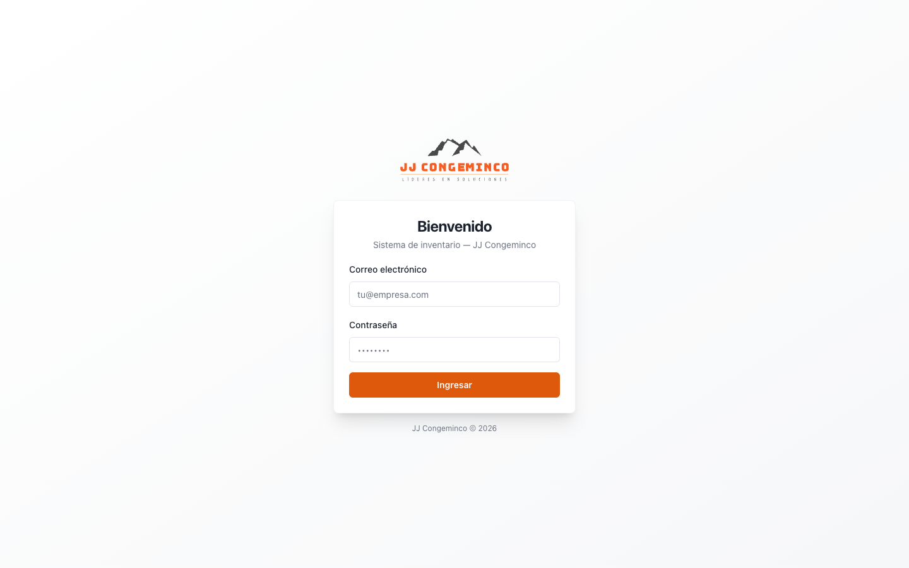
Pantalla de inicio de sesión del Sistema de Inventario JJ Congeminco.
Si no puedes entrar
Verifica que el correo esté bien escrito y que la contraseña respete mayúsculas y minúsculas. Si el problema continúa, contacta al administrador: tu usuario debe estar habilitado para poder operar.
Consejo de seguridad
No compartas tu contraseña. El sistema sabe qué hace cada usuario, así que todo movimiento queda asociado a tu nombre.
3Conociendo la pantalla
Una vez dentro verás siempre la misma estructura. Conocerla te ayudará a moverte rápido.
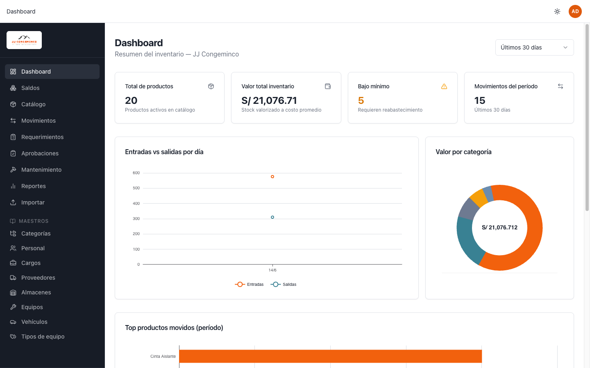
Vista general: menú lateral a la izquierda, barra superior y área de contenido.
Las 3 zonas principales
Zona
Dónde está
Para qué sirve
Menú lateral
Izquierda (fondo oscuro)
Acceso a todos los módulos: Dashboard, Saldos, Catálogo, Movimientos, etc.
Barra superior
Arriba
Muestra en qué sección estás, el botón de tema claro/oscuro y tu menú de usuario.
Área de contenido
Centro
Es donde trabajas: formularios, tablas y tarjetas de cada módulo.
El menú de usuario
Al hacer clic en el círculo con tus iniciales (arriba a la derecha) verás tu nombre, tu correo, tu rol y la opción Cerrar sesión.
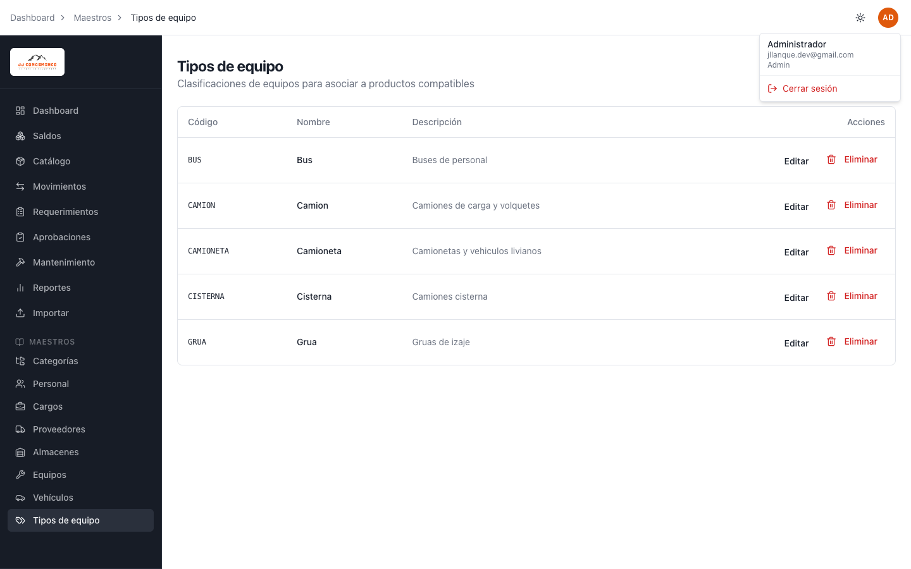
Menú de usuario: muestra tu identidad, tu rol y el botón para salir.
Tema claro u oscuro
El botón con forma de sol/luna en la barra superior cambia entre fondo claro y oscuro, según tu comodidad visual.
4Roles y permisos
No todos los usuarios ven lo mismo. El sistema asigna un rol a cada persona, y ese rol decide qué módulos puede ver y qué acciones puede hacer.
Los 4 roles
Rol
Perfil típico
Qué hace principalmente
Admin
Administrador del sistema
Todo: configura, importa, crea maestros y opera.
Gerencia
Jefatura
Consulta y aprueba; ve reportes. No carga almacén.
Supervisión
Supervisor de campo
Registra movimientos, crea y aprueba requerimientos.
Regla de oro: separación de funciones
Quien crea un requerimiento no puede aprobarlo él mismo (salvo el Admin). Esto evita errores y asegura un control sano: una persona pide y otra autoriza.
¿Entraste a una sección y te llevó al Dashboard?
Es normal: si tu rol no tiene permiso para ese módulo, el sistema te redirige automáticamente al tablero principal.
5Dashboard: tu tablero de resumen
Es la primera pantalla al entrar. Te da una "foto" rápida del inventario. Es solo de consulta: aquí no se modifica nada.
Tablero con indicadores, gráficos y la lista de productos bajo mínimo.
Qué información muestra
Indicador
Qué significa
Total de productos
Cuántos productos activos hay en el catálogo.
Valor total inventario
Cuánto vale todo el stock (cantidad × costo promedio), en Soles.
Bajo mínimo
Cuántos productos están por debajo de su stock mínimo y necesitan reposición.
Movimientos del período
Cuántas entradas/salidas ocurrieron en el rango elegido.
Gráficos y tabla
Entradas vs salidas por día: compara lo que entró y lo que salió.
Valor por categoría: qué tipo de productos concentra más valor.
Top productos movidos: los más activos del período.
Productos bajo mínimo: tabla con SKU, nombre, categoría, mínimo y stock actual.
Cambiar el período
Arriba a la derecha puedes elegir ver los últimos 7, 30 o 90 días. Todos los números y gráficos se ajustan a ese rango.
6Saldos: consultar el stock disponible
Es la pantalla más usada en el día a día para responder rápido: "¿cuánto hay de este producto?". Está pensada también para usar desde el celular en campo.
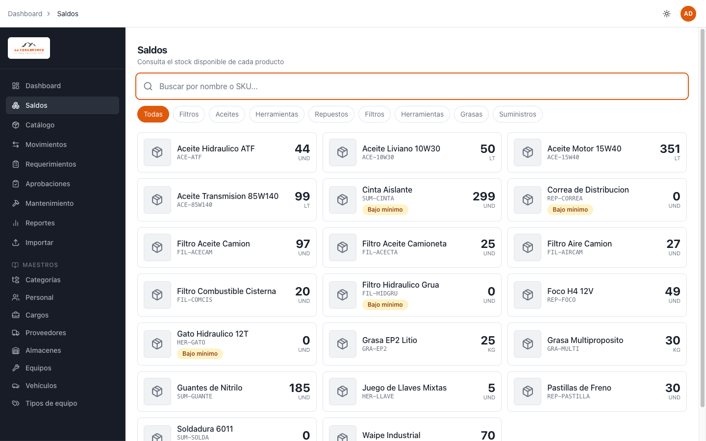
Cada tarjeta muestra el producto, su SKU y la cantidad disponible con su unidad.
Cómo buscar
Escribe el nombre o el SKU en la barra Buscar por nombre o SKU…
O usa los chips de categoría (Todas, Aceites, Herramientas, Filtros…) para filtrar.
Toca una tarjeta para ver el detalle: stock por almacén, costo promedio y equipos compatibles.
El aviso "Bajo mínimo"
Si una tarjeta muestra la etiqueta Bajo mínimo, ese producto está por debajo del stock mínimo configurado y conviene reponerlo.
Importante
Saldos es solo para consultar. Para cambiar cantidades debes usar Movimientos, Aprobaciones o Importar.
7Catálogo de productos
Aquí vive la lista maestra de todos los materiales. Cada producto tiene su ficha con datos, compatibilidad con equipos e imágenes.
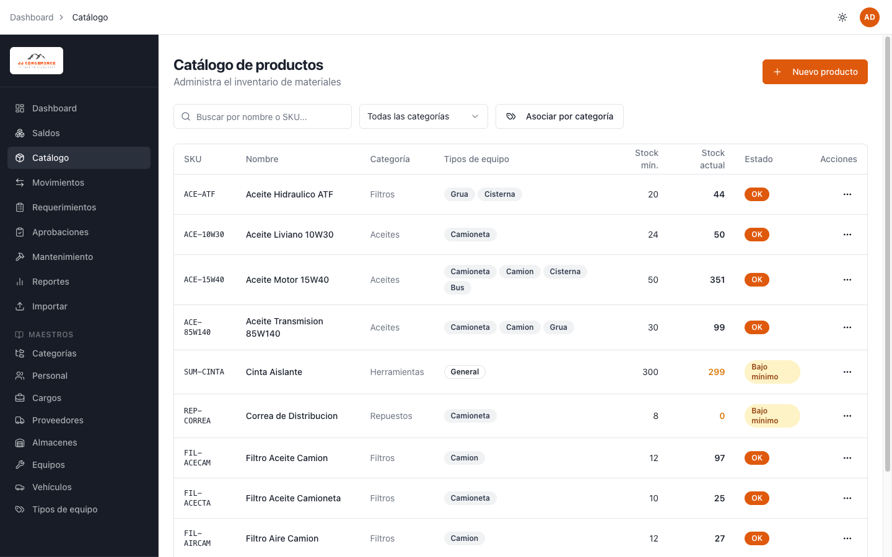
Listado del catálogo con SKU, nombre, categoría, equipos compatibles y estado de stock.
Pueden crear/editar productos: AdminAlmacenero
Crear un producto nuevo
Haz clic en el botón naranja + Nuevo producto (arriba a la derecha).
Completa los campos del formulario (ver tabla abajo).
Indica a qué equipos aplica: marca "General" o selecciona uno o más tipos de equipo.
Guarda. El producto aparecerá en la lista listo para usarse.
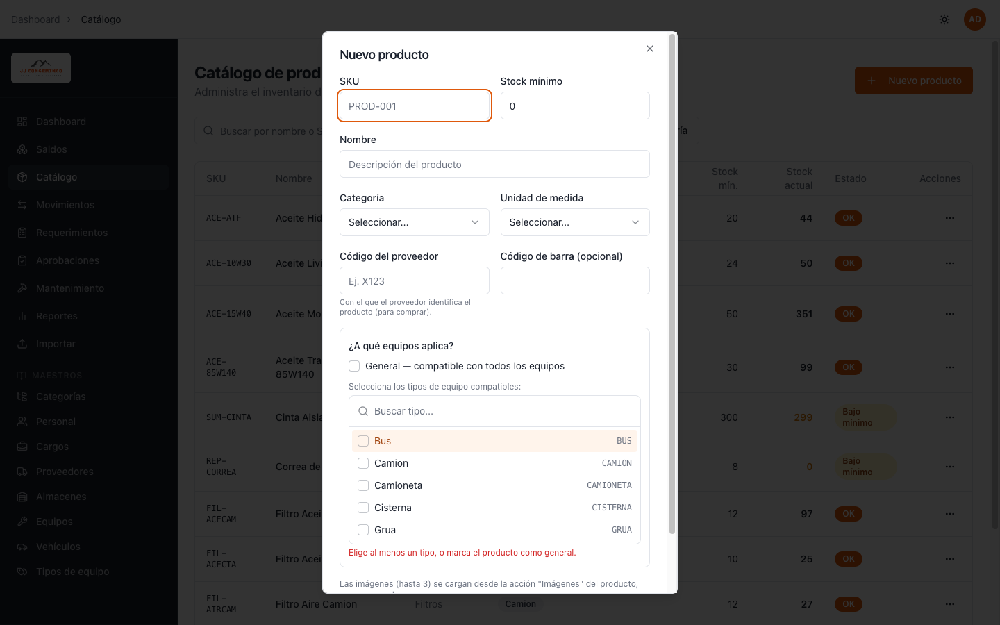
Formulario para registrar un producto nuevo.
Significado de cada campo
Campo
Qué es
¿Obligatorio?
SKU
Código único del producto (su "DNI").
Sí
Nombre
Descripción comercial del material.
Sí
Categoría
Familia a la que pertenece (Aceites, Filtros…).
Sí
Unidad de medida
Cómo se cuenta: LT, KG, UND…
Sí
Stock mínimo
Cantidad de alerta para reponer.
No (default 0)
Código del proveedor
Con el que el proveedor identifica el producto al comprar.
No
Código de barra
El código de barras del producto, si lo tiene.
No
¿A qué equipos aplica?
"General" (todos) o tipos de equipo específicos.
Sí (uno u otro)
Regla "General o por tipos" (nunca ambos)
Un producto es General (sirve para cualquier equipo, como grasa multipropósito) o está asignado a uno o más tipos de equipo (como un filtro de grúa). No puede ser las dos cosas a la vez.
Otras acciones
Desde el menú "…" de cada fila puedes Editar, gestionar Imágenes (hasta 3) y ver el Kardex (historial). No se puede eliminar un producto que ya tiene movimientos.
8Movimientos: entradas, salidas y transferencias
Es el corazón operativo: aquí registras todo lo que afecta el stock. Cada movimiento queda guardado para siempre en el historial.
Pueden registrar: AdminSupervisiónAlmacenero
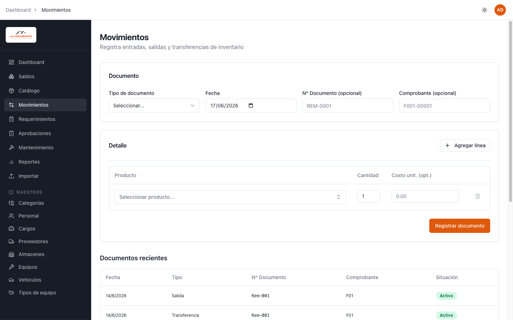
Formulario de documento (cabecera + detalle) y la lista de documentos recientes.
Los tipos de documento
Tipo
Para qué
Necesita
Existencia inicial
Cargar el stock con el que arrancas.
Almacén destino
Entrada
Registrar una compra o ingreso.
Almacén destino
Salida
Entregar material a un vehículo.
Origen + placa
Transferencia
Mover stock entre almacenes.
Origen y destino distintos
Ajuste
Corregir tras un conteo físico.
Origen y/o destino
Cómo registrar un movimiento
Elige el Tipo de documento y la fecha.
Opcional: completa el N° de documento y el comprobante (factura/guía).
Selecciona las ubicaciones (origen/destino según el tipo) y la placa si es salida.
En Detalle, haz clic en + Agregar línea y elige el producto, la cantidad y (si aplica) el costo.
Repite por cada producto y luego haz clic en Registrar documento.
Sobre el costo
En una entrada tú escribes el costo unitario de compra.
En una salida el costo se calcula solo: usa el costo promedio del producto (el promedio de lo que costó comprarlo). Solo puede cambiarse a mano desde el historial de precios.
Reglas que el sistema hace cumplir
Una salida siempre exige una placa (para saber quién consumió).
Una transferencia exige que origen y destino sean distintos.
Ninguna salida puede dejar el stock en negativo: si no hay suficiente, el sistema lo bloquea.
Filtro inteligente por placa
En salidas puedes activar "Solo productos compatibles con esta placa" para ver únicamente los repuestos que sirven a ese vehículo, más los productos generales.
9Requerimientos: pedir materiales
Un requerimiento es una solicitud formal de materiales para un equipo o vehículo. Es el primer paso antes de sacar algo del almacén con autorización.
Pueden crear: AdminSupervisiónAlmacenero
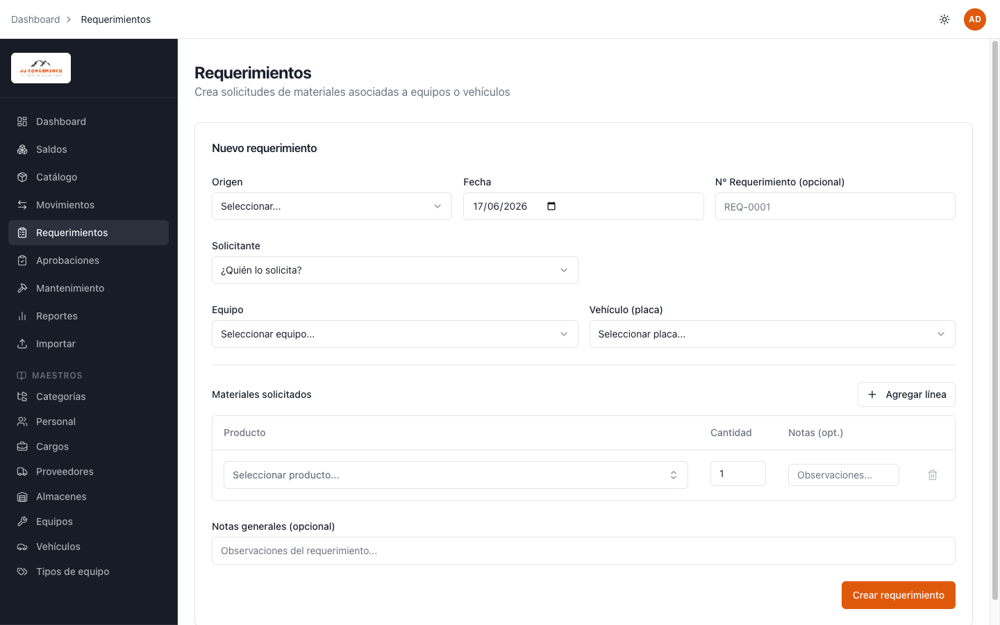
Formulario para crear una solicitud de materiales asociada a un equipo o placa.
Cómo crear un requerimiento
Elige el Origen del pedido: planificado, presupuestado o desgaste prematuro.
Indica la fecha y, si quieres, un N° de requerimiento.
Selecciona el solicitante (personal) y el equipo o la placa de destino.
Agrega los materiales solicitados: producto, cantidad y notas.
Escribe notas generales si hace falta y haz clic en Crear requerimiento.
¿Y después?
El requerimiento queda en estado pendiente. Todavía no descuenta stock. La entrega real se decide en el módulo Aprobaciones.
Equipo o placa
Debes indicar al menos uno de los dos: el equipo o la placa que recibirá los materiales.
10Aprobaciones: revisar y entregar pedidos
Es la bandeja donde se autorizan los requerimientos y se ratifican los consumos de mantenimiento.
Pueden aprobar: AdminGerenciaSupervisión
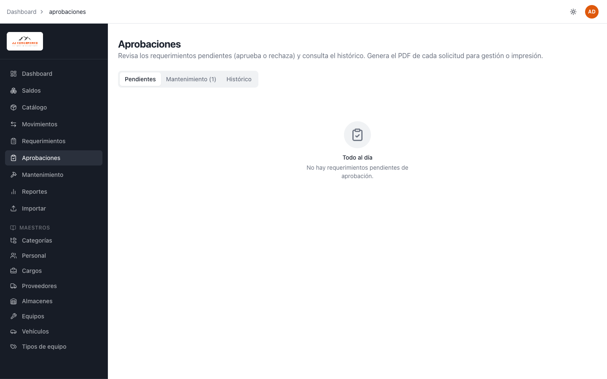
Bandeja de aprobaciones con las pestañas Pendientes, Mantenimiento e Histórico.
Las tres pestañas
Pestaña
Qué contiene
Pendientes
Requerimientos por atender o rechazar.
Mantenimiento
Órdenes de trabajo con repuestos ya consumidos, esperando ratificación.
Histórico
Lo ya atendido o anulado (solo lectura).
Cómo atender (aprobar) un requerimiento
Haz clic en la fila para abrir el detalle del pedido.
Elige el almacén de origen de donde saldrá el material.
Por cada línea, indica la cantidad a entregar (puede ser entrega parcial; 0 = no entregar esa línea).
Elige el modo: stock (sale del almacén) o compra directa (se compra al momento).
Confirma. El sistema genera la salida, descuenta el stock y marca el pedido como atendido.
Compra directa
Si no hay stock, puedes marcar una línea como "compra": el sistema registra a la vez la entrada de compra y la salida. En ese caso debes indicar proveedor, comprobante y costo.
Rechazar
También puedes rechazar un requerimiento (con motivo). Pasará al estado anulado y no descontará stock. Recuerda: no puedes aprobar un pedido que tú mismo creaste (salvo Admin).
Además, desde aquí puedes generar el PDF de cada solicitud para imprimir o archivar.
11Mantenimiento: órdenes de trabajo
Gestiona las Órdenes de Trabajo (OT) por placa: servicios preventivos o correctivos y los repuestos que se consumen.
Pueden crear OT: AdminSupervisiónAlmacenero
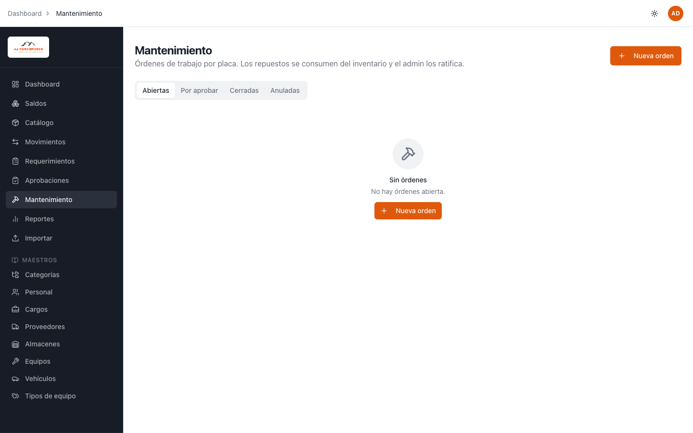
Listado de órdenes de trabajo organizado por estado.
Estados de una orden
Estado
Significa
Abierta
Creada, todavía sin consumir repuestos.
Por aprobar
Ya consumió repuestos; espera ratificación en Aprobaciones.
Cerrada
Aprobada o cerrada sin repuestos.
Anulada
Cancelada o rechazada.
Crear una orden de trabajo
Haz clic en + Nueva orden.
Elige el tipo (preventivo/correctivo), la fecha y el turno.
Selecciona la placa y el mecánico responsable (obligatorios).
Opcional: registra el kilometraje y el N° de orden.
Describe los trabajos realizados y guarda con Crear orden.
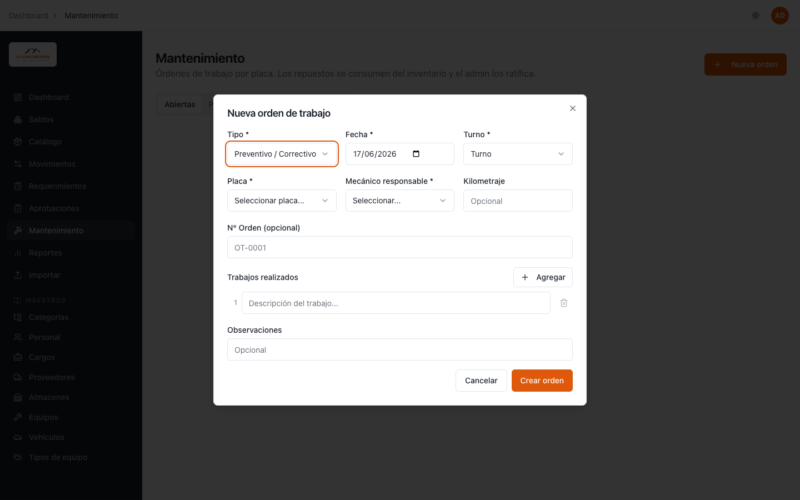
Formulario de una nueva orden de trabajo.
Consumir → reconciliar
Cuando registras los repuestos consumidos, el stock baja de inmediato para no frenar el taller. Luego, un aprobador ratifica el consumo en Aprobaciones. Si lo rechaza, el sistema devuelve el stock automáticamente.
12Reportes
Herramienta de análisis para gerencia y supervisión. Permite filtrar la información y exportarla a Excel/CSV.
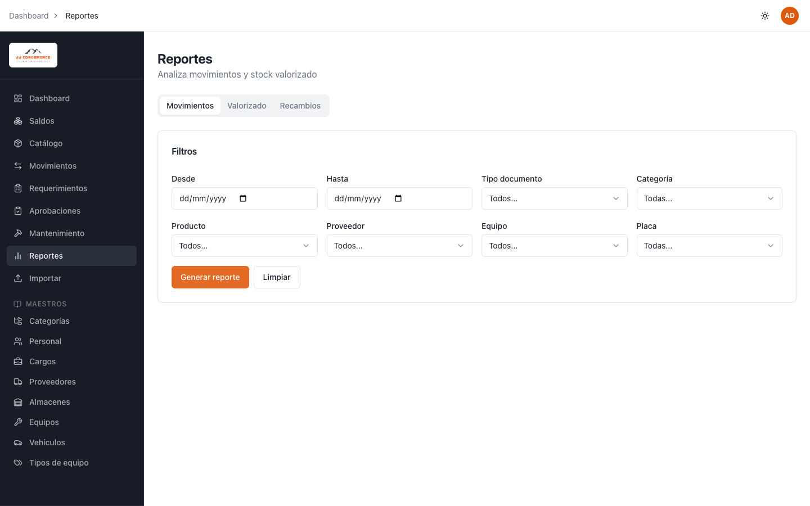
Pantalla de reportes con filtros por fecha, producto, categoría, proveedor, equipo y placa.
Los tres reportes
Reporte
Qué responde
Movimientos
¿Qué entró y salió en un período? Muestra valor de entradas, salidas y neto.
Valorizado
¿Cuánto vale mi inventario hoy? Stock × costo promedio, por categoría.
Recambios
¿Qué repuestos se cambian más seguido de lo normal? (desgaste prematuro).
Cómo generar un reporte
Elige la pestaña del reporte que necesitas.
Ajusta los filtros (fechas, categoría, producto, etc.).
Haz clic en Generar reporte.
Revisa los indicadores y la tabla; usa Exportar CSV para descargarlo.
Botón Limpiar
Si te equivocas con los filtros, usa Limpiar para reiniciarlos y empezar de nuevo.
13Importar: carga masiva desde Excel
Permite cargar muchos productos o saldos de una sola vez usando un archivo Excel (.xlsx). Disponible solo para el Admin.
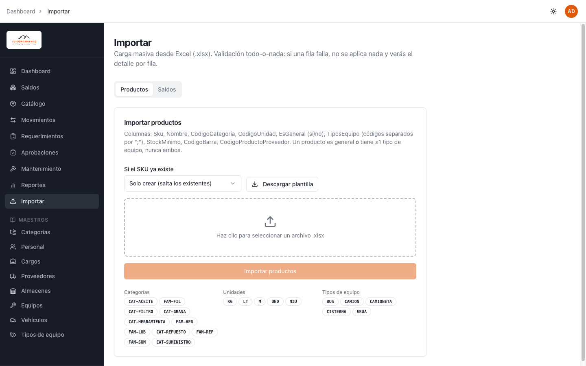
Pantalla de importación con las pestañas Productos y Saldos, y los códigos de referencia.
Validación "todo o nada"
Si una sola fila tiene un error, no se aplica nada y el sistema te muestra el detalle fila por fila. Así nunca queda una carga a medias.
Pasos recomendados
Haz clic en Descargar plantilla para tener el formato correcto.
Llena el Excel usando los códigos válidos que se muestran abajo (categorías, unidades, tipos de equipo).
Elige qué hacer si el SKU ya existe: Solo crear o Crear y actualizar.
Haz clic para seleccionar el archivo .xlsx y súbelo.
Revisa el resultado: creados, actualizados y errores. Corrige y reintenta si hace falta.
Columnas para importar Productos
Columna
Obligatorio
Significado
Sku
Sí
Código único
Nombre
Sí
Descripción
CodigoCategoria
Sí
Debe existir en maestros
CodigoUnidad
Sí
LT, KG, UND…
EsGeneral
Sí
sí / no
TiposEquipo
Si no es general
Códigos separados por ";"
StockMinimo
No
Número ≥ 0
CodigoBarra
No
Opcional
CodigoProductoProveedor
No
Opcional
Saldos iniciales
La pestaña Saldos carga cantidades por almacén. En modo "Existencia inicial" arranca el stock desde cero; en modo "Recuento" ajusta la diferencia tras una toma de inventario. Requiere una fecha de corte.
14Maestros: configuración del sistema
Los "maestros" son los catálogos base que alimentan al resto del sistema: categorías, personal, almacenes, equipos, etc. Configurarlos bien hace que todo lo demás funcione ordenado.
Acceso general: AdminGerenciaSupervisión
14.1 Categorías y familias
Clasifican los productos de forma jerárquica (familia → categoría). Ej.: la familia "Lubricantes" agrupa "Aceites" y "Grasas".
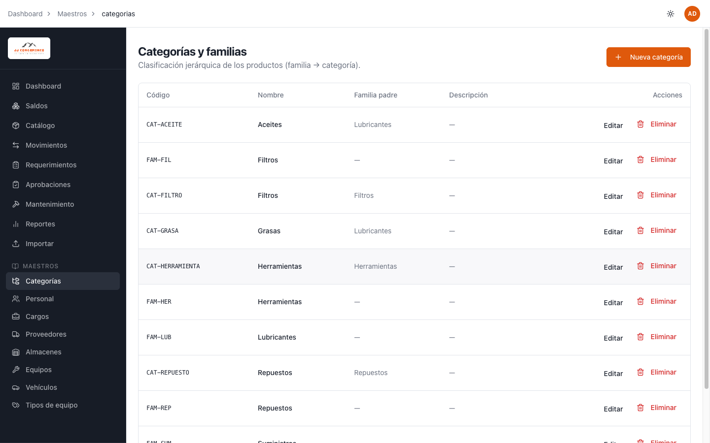
Listado de categorías y familias con su código, nombre y familia padre.
14.2 Personal
Registro de las personas que solicitan materiales o actúan como mecánicos. Cada uno tiene un cargo y, opcionalmente, un usuario de acceso.
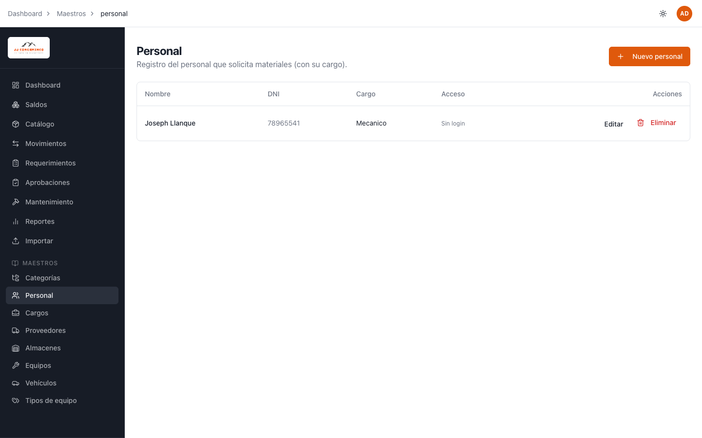
Personal registrado con su DNI, cargo y estado de acceso.
14.3 Cargos
Catálogo de puestos (Mecánico, Operador, Jefe de taller…) que se asignan al personal.
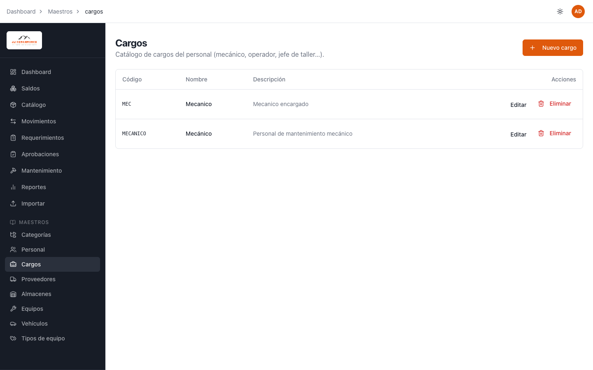
Listado de cargos disponibles.
14.4 Proveedores
Empresas a las que se compra. Cada proveedor puede tener varias cuentas bancarias para los pagos. AdminAlmacenero
Maestro de proveedores.
14.5 Almacenes
Las ubicaciones físicas donde se guarda el stock (almacén central, proyecto, etc.). Un mismo producto puede estar en varios almacenes.
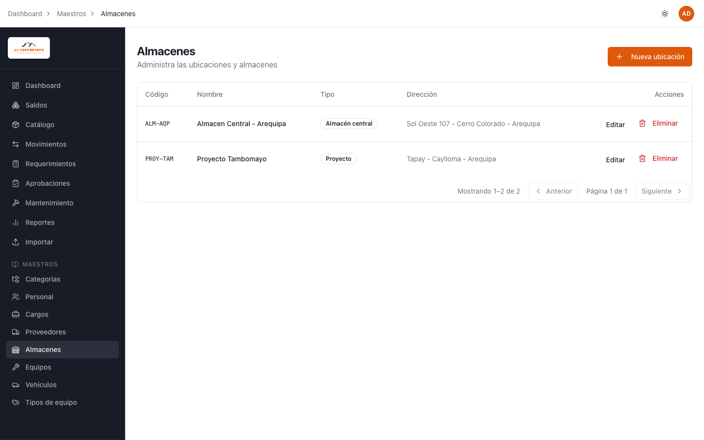
Listado de almacenes y ubicaciones con su tipo y dirección.
14.6 Equipos
Las máquinas y equipos de la empresa (grúas, cisternas, volquetes…). Se asocian a un tipo de equipo para definir qué repuestos les sirven.
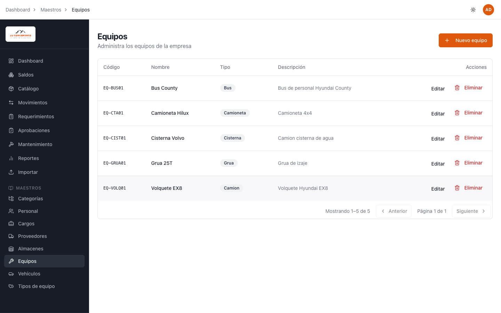
Maestro de equipos con su código, nombre y tipo.
14.7 Vehículos
Las placas que consumen materiales en salidas y mantenimiento. Cada placa se vincula a un equipo.
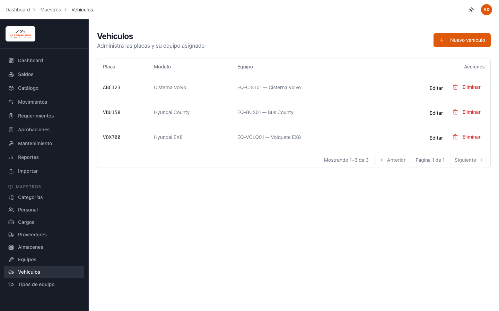
Maestro de vehículos: placa, modelo y equipo asignado.
14.8 Tipos de equipo
Clasificaciones (Camión, Grúa, Cisterna…) que sirven para definir la compatibilidad de repuestos. Los productos se asocian a estos tipos o se marcan como "General".
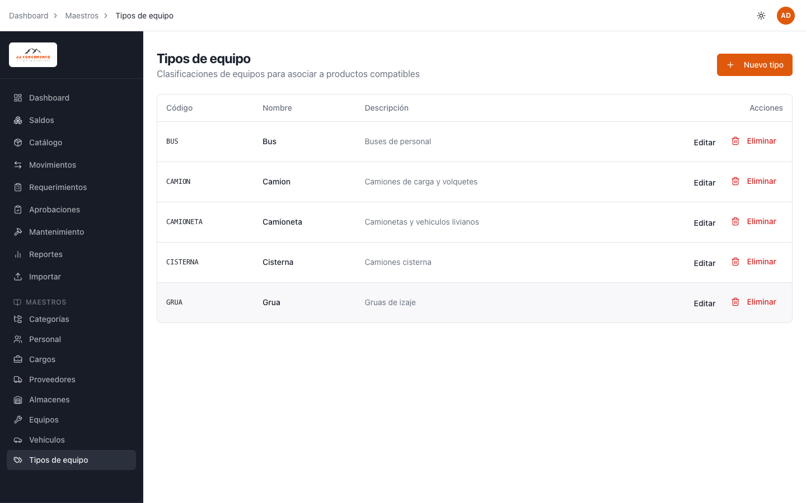
Maestro de tipos de equipo.
Acciones comunes en todos los maestros
Para agregar: botón + Nuevo… arriba a la derecha.
Para modificar: botón Editar en la fila.
Para borrar: botón Eliminar en la fila.
No se puede borrar todo
Si un registro está siendo usado (por ejemplo, una categoría con productos), el sistema impide eliminarlo para no romper la información.
15Glosario para principiantes
Las palabras que más verás en el sistema, explicadas de forma sencilla.
Término
Qué significa
SKU
Código único interno de un producto, como su "DNI". Se usa para buscar e importar.
Stock mínimo
Cantidad límite: si el stock cae por debajo, el sistema avisa "Bajo mínimo" para reponer.
Costo promedio
Precio medio del producto. Sube cuando entra mercadería; las salidas se valorizan a ese promedio.
Kardex
Historial cronológico de entradas y salidas de un producto, con su saldo.
Almacén / Ubicación
Lugar físico donde está el stock (central, proyecto…).
Categoría / Familia
Agrupación de productos (aceites, filtros…). Puede ser jerárquica.
Unidad de medida
Cómo se cuenta el producto: litros (LT), kilos (KG), unidades (UND)…
Registro histórico
El listado oficial de todos los movimientos; nunca se borra y es la "verdad" del inventario.
Documento de inventario
La "boleta" (entrada, salida, transferencia…) que genera movimientos.
Placa
Vehículo identificado por su matrícula; obligatoria en salidas.
Tipo de equipo
Clasificación de máquinas (camión, grúa…) para saber qué repuestos son compatibles.
Producto general
Repuesto válido para cualquier equipo (tornillos, grasa multipropósito…).
Requerimiento
Pedido formal de materiales antes de sacarlos del almacén.
Orden de trabajo (OT)
Registro de un mantenimiento a una placa, con trabajos y repuestos.
Compra directa
Cuando no hay stock: se registra entrada de compra + salida a la vez.
16Preguntas frecuentes y consejos
Preguntas frecuentes
No veo un módulo que otra persona sí ve
Es por tu rol. Cada rol tiene módulos distintos (ver Capítulo 4). Si necesitas acceso, pídeselo al administrador.
Quiero descontar stock, ¿dónde lo hago?
En Movimientos (salida directa) o en Aprobaciones (al atender un requerimiento). Nunca desde Saldos, que es solo consulta.
El sistema no me deja registrar una salida
Revisa que: (1) hayas elegido una placa, y (2) que haya stock suficiente. El sistema bloquea salidas que dejarían el stock en negativo.
Creé un requerimiento pero no descontó stock
Es correcto: el requerimiento solo pide. El descuento ocurre cuando alguien lo atiende en Aprobaciones.
¿Por qué no puedo aprobar mi propio pedido?
Por la regla de separación de funciones: quien pide no autoriza (salvo el Admin). Es un control para evitar errores.
Consejos para trabajar mejor
Buenas prácticas
Mantén los maestros actualizados (categorías, almacenes, placas): todo lo demás depende de ellos.
Define un stock mínimo realista en cada producto para que las alertas sean útiles.
Registra los movimientos el mismo día en que ocurren para que los saldos siempre reflejen la realidad.
Usa el comprobante (factura/guía) en las entradas: facilita auditorías y reportes.
Revisa el Dashboard al iniciar el día para ver qué está bajo mínimo.
¿Necesitas ayuda?
Ante cualquier duda o si algo no funciona como esperas, contacta al administrador del sistema. Recuerda que cada acción queda registrada con tu usuario, así que trabaja con confianza: siempre se puede rastrear y corregir.
Manual de Usuario · Sistema de Gestión de Inventario JJ Congeminco · Versión 1.0 · Junio 2026
Guía para todos los usuarios